Découvrez
EUROPE DU NORD
8 jours - 4500 km - Adepte

Découvrez
8 jours - 4500 km - Adepte
Mettons nous d’accord tout de suite : prenez des pneus neiges et des chaînes, entrainez vous à changer vos pneux et à rouler sur la neige avant de commencer ce voyage.
Pour démarrer ce petit voyage, une petite visite d’hôtel vous irait ? mais pas un hôtel comme les autres, ici c’est un hôtel entièrement fait de glace que nous vous proposons ,l’Ice hôtel à Jukkasjärvi. Si ça ne vous fait pas froid au yeux vous pourrez même passer une nuit dans cet hôtel.
27 - 30 janv 2017
Un festival qui fête le retour des lumière et et du froid de l’hiver, avec de nombreuses construction réalisé grâce à la neige et la glace .
Vous avez pris la E10 ? excellent choix, la majeure partie de votre trajet sera de longé le (magnifique) lac de tornestrak, vous avez seulement 100 km à effectuer, c’est pour cela que nous vous conseillons de prendre votre temps .
Sur votre route pour rejoindre la Norvège nous vous conseillons de vous arrêter un temps, si il fait nuit , et que le ciel est dégagé vous pourrez profiter d’un des plus beaux phénomènes naturel existant : au coeur de parc national d’Abisko vous pourrez admirer de magnifiques aurores boréales.
Des treks sont organisés à travers le parc national, paysages à couper le souffle , de longues marches vous feront découvrir la beauté naturel de la suède .
Continuez sur l’E10, encore une petite centaine de kilomètres , roulez tranquillement et découvrez ce paysage calme et apaisant, baignez vous dans un des nombreux lacs (pour les plus courageux ! ) et visitez les forêts entourant Vassdalen.
Vous voilà arrivé en Norvège, plus précisément à Narvik, nous n’avons pas de lieu précisément à vous faire découvrir, car la ville elle-même est à voir, en effet, c’est une ville qui fut totalement détruite en 1940, de nombreux cimetières sont présents dans cette ville.
Un retour dans le temps au Narvik War Museum, qui comme son nom l’indique, contient de nombreux objets, véhicules, … datant de la 2ème guerre mondiale.
Fini les lacs, bonjour les forêts Norvégienne, la majeure partie de votre trajet se fera sur l’E6 qui traverse un grand nombre de forêts, nous vous déconseillons de faire ce trajet en hiver, le risque de vous perdre dans la neige est élevé.
La huitième ville de Norvège fournit beaucoup d’endroit à visiter, nous avons choisi de vous conseiller le jardin botanique de tromso, lieu peu connu, jeune (ouvert en 1994) et petit (2 hectares), vous pourrez admirer plusieurs milliers de plantes Norvégienne mais pas que.
Visiter l’Homemade, une maison où les artistes de Tromso font des représentations, ou tout simplement parlent avec vous de la vie Norvégienne , quoi de mieux que de rencontrer les habitants d’une ville pour connaître la ville ?
Reprenez l’E6 (vous devriez être habitué à cette route) et prenez l’E8, cette route travers de nombreuses plaines rocailleuses et quelques lacs, la brume le matin donnent des paysage à couper le souffle.
Prenez un chien de traineau et partez (avec un guide tout de même) à la découverte des nombreuses montagnes et lacs qu’offre la région.

début 2017
Comme son nom l’indique cet événement est l’occasion de voir de magnifiques sculptures sur glace et neige.
Continuer sur l’E8 sur 250 km et accrochez vous, le nombre de virages est impressionnant, faites très attention à la neige, en bref prenez votre temps tout simplement, et contemplez le paysage Finlandais.
Le Fell Lapland Visitor Centre est le lieu parfait pour tous les curieux voulant en savoir plus sur la culture Finlandaise, mais surtout sur la nature et les cultures nomades (comme les Sami par exemple), le lieu montre le matériel appartenant au passé et au présent que les voyageurs du nord utilisent afin de braver le grand froid.
Mars 2017
célébration de la culture lapone (et oui vous êtes bien en Laponie ! ) qui a lieu chaque année depuis 500 ans au mois de mars , vous pourrez assistez à des courses de rennes, de concours de lasso, de soirées musicales ….
Enfoncez vous dans les terres suédoises, 300km de lacs, de virages, de vallées, de plaines rocailleuse, de forêts… un vrai récapitulatif de votre voyage vous attend sur la route (E45 et E10), et toujours en encore un paysage grandiose .
Aller à la passerelle de Nikkaluokta pour atteindre la station de montagne de Kebnekaise, vous pourrez alors parcourir une des plus grandes randonnées et une des plus connus de Suède, surnommé “the King’s trail” , nous vous conseillons de la faire en Septembre, une fois que la nuit est revenu, les montagnes prennent de remarquables teintes rouges, jaune-or .